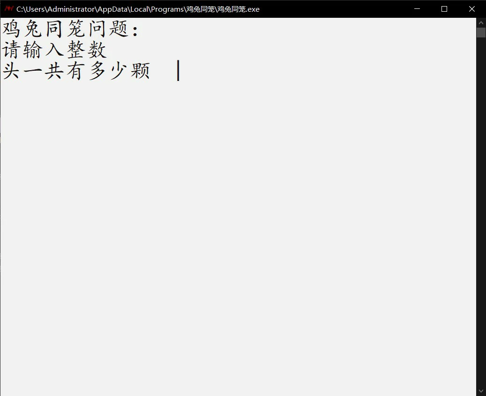
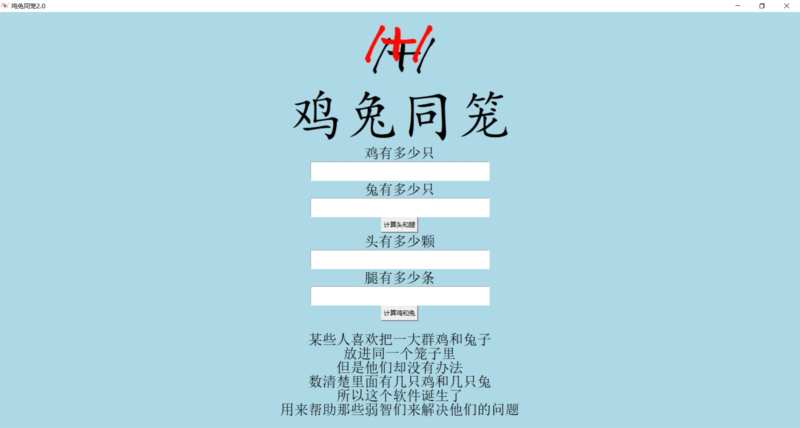

注：下载链接指向我的另一个GitHub仓库。
| 时间 | 软件 |
|---|---|
| 2022 年 12月 20日 |
鸡兔同笼1.0  点击下载：32位系统安装程序64位系统安装程序 张博洋正式制作的第一个Windows软件 提示：此版本软件在下载和运行时，可能需要关闭Windows安全中心的实时保护功能 或者是把这个软件的文件夹 添加到病毒和威胁防护的排除项中 因为Windows系统会误以为我的软件中含有病毒 |
| 2023 年 1月 18日 |
鸡兔同笼2.0  点击下载：安装程序增加了GUI界面； |
| 2023 年 1月 29日 |
鸡兔同笼2.1点击下载：安装程序更新 ： 增加了唐僧取经时间计算功能； 修复了一些已知问题. |
| 2023 年 8月 15日 |
点击下载apk：安装程序这是我制作的第一个Android软件，用来练习整数加减法口算。 实际上还没有做完整（图标不是我自己的）。 |